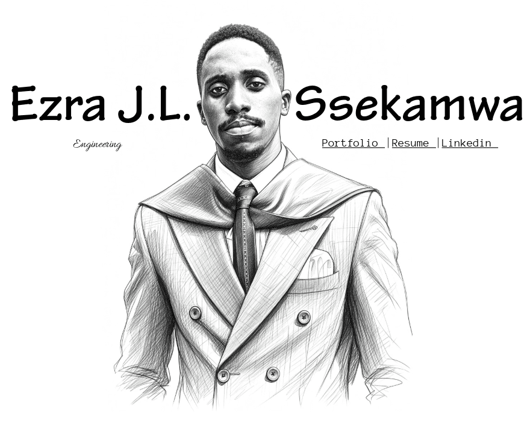

02 / Engineer by training. Explorer by nature.
I’m drawn to structures and systems that shape our world and the code, intelligence, and creativity that could reshape it.
Engineering / Programming / AI / Art / Gaming / Chess / Running / Badminton
03 / Start a conversation
An interesting idea, a shared curiosity, or a new challenge? I’d love to hear from you.
Get in touch on LinkedIn© 2026 Ezra J.L. Ssekamwa